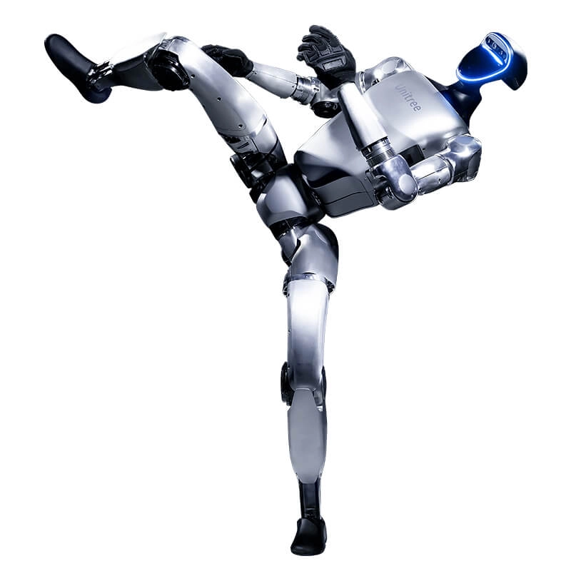
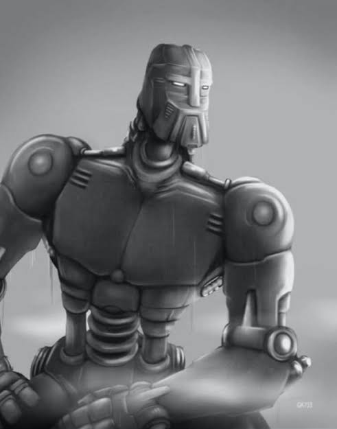

Cos ciekawego o robotach
Ciekawostka pierwsza
1. Skąd wzięło się słowo „robot”?
Słowo to pojawiło się po raz pierwszy w 1920 roku w sztuce teatralnej „R.U.R.” (Rossumovi Univerzální Roboti) czeskiego pisarza Karela Čapka. Pochodzi ono od czeskiego słowa robota, co oznacza ciężką pracę lub pańszczyznę.

Ciekawostka druga
2. Roboty są na Marsie
Roboty takie jak Curiosity i Perseverance badają powierzchnię Marsa. Robią zdjęcia, analizują skały i zbierają informacje, które pomagają naukowcom poznawać Czerwoną Planetę.

Ciekawostka trzecia
3. Niektóre roboty potrafią chodzić jak ludzie
Istnieją roboty humanoidalne, które potrafią chodzić na dwóch nogach, biegać, podnosić przedmioty, a nawet utrzymywać równowagę po popchnięciu.